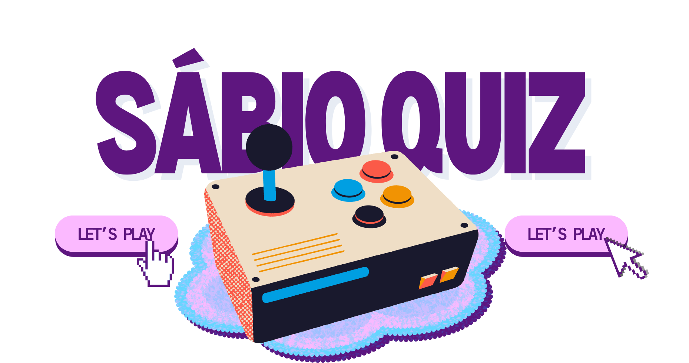

 |
|||
|---|---|---|---|
| Jogar (em desenvolvimento) | |||
Sobre o jogo
Venha se desafiar no Sábio Quiz, um jogo de perguntas e respostas onde os conhecimentos gerais são a chave para a vitória!
O Sábio Quiz é uma plataforma web interativa de jogos de perguntas
e respostas desenvolvida para transformar a rotina em sala de aula
através da gamificação. Inspirado no modelo dinâmica do Kahoot, o
site permite que os docentes criem e gerenciem seus próprios quizzes
personalizados para matérias e disciplinas específicas de forma rápida e intuitiva.
Do outro lado da tela, os estudantes participam ativamente jogando e testando seus
conhecimentos em tempo real, o que transforma o processo de fixação de conteúdos em
uma experiência leve, competitiva e altamente engajadora!
Créditos
Site HTML estilizado com CSS, criação do banco de dados, programação com JavaScript, e jogo idealizado por:
- Adam da Silva Barreto
- Paulo César da Costa Cabral
- Paulo Leão Borges Júnior
Somos estudantes do IFRN campus Ipanguaçu, e cursando Ensino Médio e Curso Técnico Integrado em Informática.